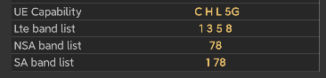

Frequently Asked Questions (Q&A)
1. Equipment requirements
1.1 The system is at least Android 6.0 or higher.
1.2 Frequency lock, network lock, signaling and more physical layer parameters require Qualcomm chipset, and can be output normally after ROOT.
1.3 Huawei and other chips can use the test function without affecting the configuration test plan and task execution function. The file format can be CSV.
1.4 Early mobile phones such as S7, MI6 and other devices that do not support dual 4G, sometimes there is a phenomenon that the lock frequency band falls back to 2G, but the frequency lock point is normal.
1.5 If the frequency band exists, it will fall back to 2G after being locked. At this time, you can re-check the "4G" button to lock the network to force it to enter 4G mode.
2. Which network locks are supported
-
GSM lock frequency band.
-
WCDMA lock frequency band and uarfcn.
-
LTE lock frequency band, PCI, Eafcn.
-
NR lock frequency band, PCI, Arfcn.
3. How to know which LTE frequency bands are currently supported by the device
You can see the list of supported devices on the "Devices" page, and select the lock on the right after checking.

4. What to do if the list shows that it is loading
Confirm whether it is a Qualcomm chipset, and it has been ROOT and authorized. If all are satisfied, it may be that the new phone needs to be adapted.
5. What to do if I don't know which frequency bands to lock
First find the list of supported LTE frequency bands on the device page, and then try them separately. If the list is empty, you can determine which frequency bands Google's current operator supports.
Then check the frequency band list. Don't select more than one at a time, you need to try one by one. After successfully locking the network frequency band, you can see the corresponding arfcn in the LTE page,
Remember that if you find that the arfcn is good in the later stage of these Arfcn , you can directly enter the arfcn number at the frequency, such as 375. Up to 2 arfcns can be input at a time.
6. Ordinary member rights
Ordinary members can smoothly use the frequency band lock ,PCI lock,Arfcn and network lock functions.
7. What to do if the frequency lock function not work
Some mobile phones cannot be used normally due to driver or permission issues, you can try the following methods in the settings
-
Turn off the firewall.
-
Select compatibility mode.

8. Premium membership rights
Premium members can use all the functions of the software without restrictions
-
Task test.
-
File recording.
-
Memory playback (signaling, event, parameter synchronization).
-
File playback.
-
Import of cell parameters and base station connection, query.
-
Batch signaling export (support csv, pcap).
-
View and export a single signal.
-
Signaling and event dual card separation.
-
Map tracking export (support csv, kml).
9. What to do if the outdoor map track is not continuous
For power saving considerations, Android currently restricts background applications from using location requests. If there is such a requirement in the drive test, you need to do the following settings, take Xiaomi mobile phone as an example:
-
Select "No restrictions" in the power saving strategy.
-
Select "Always allow" in the permission management.
-
If you could not see this option,please contact with author.
10. No sip message in Samsung devices while calling
Please select support in settings -> More settings -> Misc settings